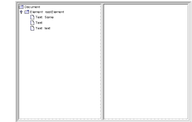
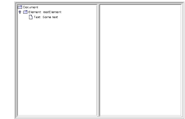

Creating and Manipulating a DOM
By now, you understand the structure of the nodes that make up a DOM. Creating a DOM is easy. This section of the DOM tutorial is going to take much less work than anything you've seen up to now. All the foregoing work, however, has generated the basic understanding that will make this section a piece of cake.
Obtaining a DOM from the Factory
In this version of the application, you'll still create a document builder factory, but this time you'll tell it to create a new DOM instead of parsing an existing XML document. You'll keep all the existing functionality intact, however, and add the new functionality in such a way that you can flick a switch to get back the parsing behavior.
Note: The code discussed in this section is in
DomEcho05.java.
Modify the Code
Start by turning off the compression feature. As you work with the DOM in this section, you'll want to see all the nodes:
Next, you create a
buildDommethod that creates thedocumentobject. The easiest way is to create the method and then copy the DOM-construction section from themainmethod to create thebuildDom. The modifications shown next show you the changes needed to make that code suitable for thebuildDommethod.public class DomEcho05 extends JPanel { ... public static void makeFrame() { ... }public static void buildDom() { DocumentBuilderFactory factory = DocumentBuilderFactory.newInstance(); try { DocumentBuilder builder = factory.newDocumentBuilder();document = builder.parse( new File(argv[0]) );document = builder.newDocument();} catch (SAXException sxe) { ...} catch (ParserConfigurationException pce) { // Parser with specified options can't be built pce.printStackTrace();} catch (IOException ioe) { ...} }In this code, you replace the line that does the parsing with one that creates a DOM. Then, because the code is no longer parsing an existing file, you remove exceptions that are no longer thrown:
SAXExceptionandIOException.And because you will be working with
Elementobjects, add the statement to import that class at the top of the program:Create Element and Text Nodes
Now, for your first experiment, add the
Documentoperations to create a root node and several children:public class DomEcho05 extends JPanel { ... public static void buildDom() { DocumentBuilderFactory factory = DocumentBuilderFactory.newInstance(); try { DocumentBuilder builder = factory.newDocumentBuilder(); document = builder.newDocument(); // Create from whole clothElement root = (Element) document.createElement("rootElement"); document.appendChild(root); root.appendChild( document.createTextNode("Some") ); root.appendChild( document.createTextNode(" ") ); root.appendChild( document.createTextNode("text") );} catch (ParserConfigurationException pce) { // Parser with specified options can't be built pce.printStackTrace(); } }Finally, modify the argument-list checking code at the top of the
mainmethod so that you invokebuildDomandmakeFrameinstead of generating an error:public class DomEcho05 extends JPanel { ... public static void main(String argv[]) { if (argv.length != 1) {System.err.println("..."); System.exit(1);buildDom(); makeFrame(); return;}That's all there is to it! Now if you supply an argument the specified file is parsed, and if you don't, the experimental code that builds a DOM is executed.
Run the Application
Compile and run the program with no arguments, producing the result shown in Figure 6-13:

Figure 6-13 Element Node and Text Nodes Created
Normalizing the DOM
In this experiment, you'll manipulate the DOM you created by normalizing it after it has been constructed.
Note: The code discussed in this section is in
DomEcho06.java.
Add the following highlighted code to normalize the DOM:
public static void buildDom() { DocumentBuilderFactory factory = DocumentBuilderFactory.newInstance(); try { ... root.appendChild( document.createTextNode("Some") ); root.appendChild( document.createTextNode(" ") ); root.appendChild( document.createTextNode("text") );document.getDocumentElement().normalize();} catch (ParserConfigurationException pce) { ...In this code,
getDocumentElementreturns the document's root node, and thenormalizeoperation manipulates the tree under it.When you compile and run the application now, the result looks like Figure 6-14:

Figure 6-14 Text Nodes Merged After Normalization
Here, you can see that the adjacent text nodes have been combined into a single node. The normalize operation is one that you typically use after making modifications to a DOM, to ensure that the resulting DOM is as compact as possible.
Note: Now that you have this program to experiment with, see what happens to other combinations of
CDATA, entity references, and text nodes when you normalize the tree.
Other Operations
To complete this section, we'll take a quick look at some of the other operations you might want to apply to a DOM:
Traversing Nodes
The
org.w3c.dom.Nodeinterface defines a number of methods you can use to traverse nodes, includinggetFirstChild,getLastChild,getNextSibling,getPreviousSibling, andgetParentNode. Those operations are sufficient to get from anywhere in the tree to any other location in the tree.Searching for Nodes
When you are searching for a node with a particular name, there is a bit more to take into account. Although it is tempting to get the first child and inspect it to see whether it is the right one, the search must account for the fact that the first child in the sublist could be a comment or a processing instruction. If the XML data hasn't been validated, it could even be a text node containing ignorable whitespace.
In essence, you need to look through the list of child nodes, ignoring the ones that are of no concern and examining the ones you care about. Here is an example of the kind of routine you need to write when searching for nodes in a DOM hierarchy. It is presented here in its entirety (complete with comments) so that you can use it as a template in your applications.
/** * Find the named subnode in a node's sublist. * <li>Ignores comments and processing instructions. * <li>Ignores TEXT nodes (likely to exist and contain * ignorable whitespace, if not validating. * <li>Ignores CDATA nodes and EntityRef nodes. * <li>Examines element nodes to find one with * the specified name. * </ul> * @param name the tag name for the element to find * @param node the element node to start searching from * @return the Node found */ public Node findSubNode(String name, Node node) { if (node.getNodeType() != Node.ELEMENT_NODE) { System.err.println( "Error: Search node not of element type"); System.exit(22); } if (! node.hasChildNodes()) return null; NodeList list = node.getChildNodes(); for (int i=0; i < list.getLength(); i++) { Node subnode = list.item(i); if (subnode.getNodeType() == Node.ELEMENT_NODE) { if (subnode.getNodeName().equals(name)) return subnode; } } return null; }For a deeper explanation of this code, see Increasing the Complexity in When to Use DOM.
Note, too, that you can use APIs described in Summary of Lexical Controls to modify the kind of DOM the parser constructs. The nice thing about this code, though, is that it will work for almost any DOM.
Obtaining Node Content
When you want to get the text that a node contains, you again need to look through the list of child nodes, ignoring entries that are of no concern and accumulating the text you find in
TEXTnodes,CDATAnodes, andEntityRefnodes.Here is an example of the kind of routine you can use for that process:
/** * Return the text that a node contains. This routine:<ul> * <li>Ignores comments and processing instructions. * <li>Concatenates TEXT nodes, CDATA nodes, and the results of * recursively processing EntityRef nodes. * <li>Ignores any element nodes in the sublist. * (Other possible options are to recurse into element * sublists or throw an exception.) * </ul> * @param node a DOM node * @return a String representing its contents */ public String getText(Node node) { StringBuffer result = new StringBuffer(); if (! node.hasChildNodes()) return ""; NodeList list = node.getChildNodes(); for (int i=0; i < list.getLength(); i++) { Node subnode = list.item(i); if (subnode.getNodeType() == Node.TEXT_NODE) { result.append(subnode.getNodeValue()); } else if (subnode.getNodeType() == Node.CDATA_SECTION_NODE) { result.append(subnode.getNodeValue()); } else if (subnode.getNodeType() == Node.ENTITY_REFERENCE_NODE) { // Recurse into the subtree for text // (and ignore comments) result.append(getText(subnode)); } } return result.toString(); }For a deeper explanation of this code, see Increasing the Complexity in When to Use DOM.
Again, you can simplify this code by using the APIs described in Summary of Lexical Controls to modify the kind of DOM the parser constructs. But the nice thing about this code is that it will work for almost any DOM.
Creating Attributes
The
org.w3c.dom.Elementinterface, which extendsNode, defines asetAttributeoperation, which adds an attribute to that node. (A better name from the Java platform standpoint would have beenaddAttribute. The attribute is not a property of the class, and a new object is created.)You can also use the
Document'screateAttributeoperation to create an instance ofAttributeand then use thesetAttributeNodemethod to add it.Removing and Changing Nodes
To remove a node, you use its parent
Node'sremoveChildmethod. To change it, you can use either the parent node'sreplaceChildoperation or the node'ssetNodeValueoperation.Inserting Nodes
The important thing to remember when creating new nodes is that when you create an element node, the only data you specify is a name. In effect, that node gives you a hook to hang things on. You hang an item on the hook by adding to its list of child nodes. For example, you might add a text node, a
CDATAnode, or an attribute node. As you build, keep in mind the structure you examined in the exercises you've seen in this tutorial. Remember: Each node in the hierarchy is extremely simple, containing only one data element.Finishing Up
Congratulations! You've learned how a DOM is structured and how to manipulate it. And you now have a DomEcho application that you can use to display a DOM's structure, condense it to GUI-compatible dimensions, and experiment with to see how various operations affect the structure. Have fun with it!
All of the material in The J2EE(TM) 1.4 Tutorial is copyright-protected and may not be published in other works without express written permission from Sun Microsystems.